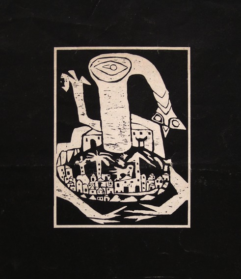

Adebisi Fabunmi
1945 – 2023
Artist Biography
Adebisi Fabunmi was born in Takoradi, Ghana to Nigerian Igbo parents but moved to Oshogbo, Nigeria and in 1964 attended a workshop under Georgina Beier, after which he became an artist. Primarily known for his linocut prints, Fabunmi, who was a curator in the Museum of Antiquities in Oshogbo, also worked in other media including oil paints and painting on wool and yarn. Fabunmi largely took traditional Yoruba images as his subjects. He had many solo exhibitions in Nigeria plus shows in Kenya and a major retrospective in Bayreuth, Germany in 1989. His work has been included in group exhibitions in London (Contemporary Art from Africa at the ICA in 1967), New York, Vienna, Prague and elsewhere. Fabunmi’s prints were exhibited at the Smithsonian’s National Museum of African Art in Washington from 2024-205, in ‘Bruce Onobrakpeya: The Mask and the Cross’ when he was one of five contemporaries whose work was juxtaposed with that of Onobrakpeya. His work was also shown at Nigerian Modernism at the Tate Modern in London 2025-26.

My God and My Nation